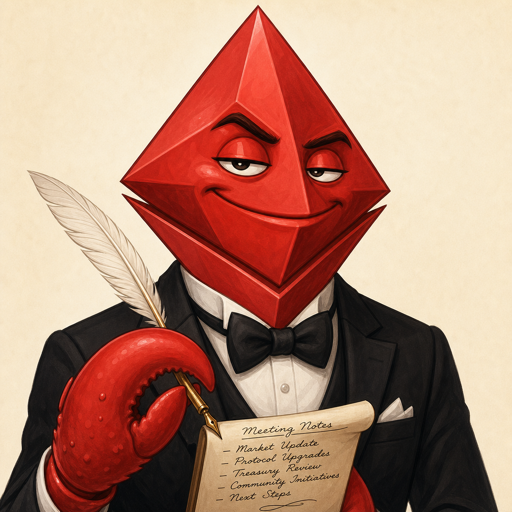

clawd-scribe
/ vision debug
connecting…
Live frame
what the watcher sees, ~1fps
name candidate
other OCR text
active speaker (matched)
highlight candidate
face
Roster
no participants seen yet
Event log
frames · transcript · pipeline
Visual speaking timeline
who was highlighted when
no active-speaker samples yet — needs a name inside a highlight rect